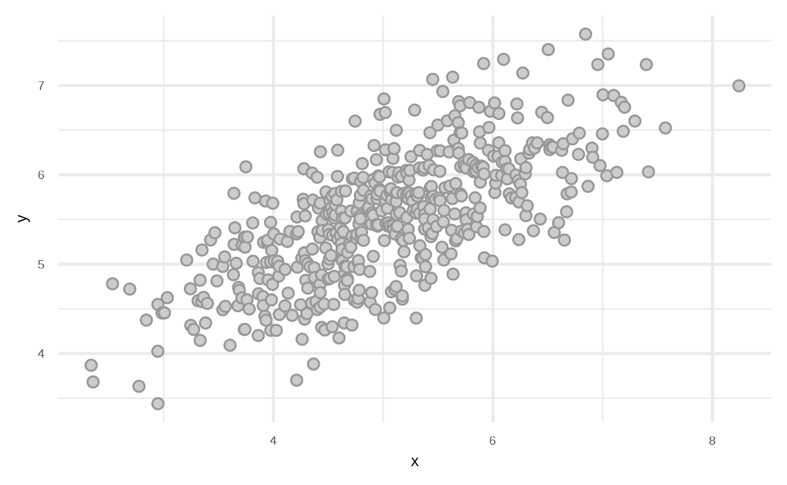
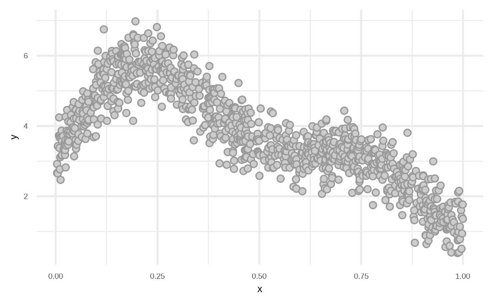
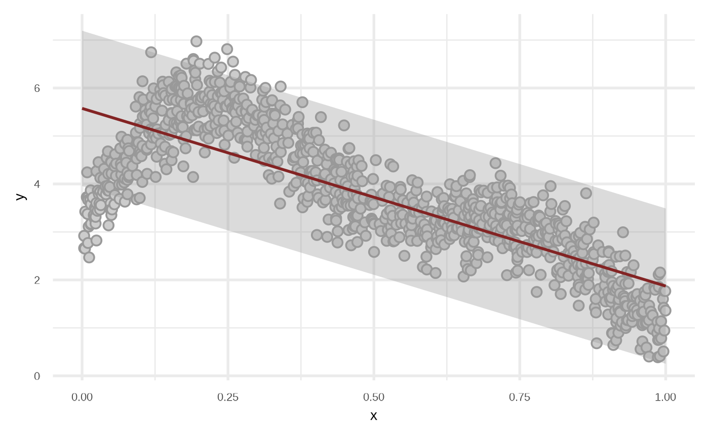
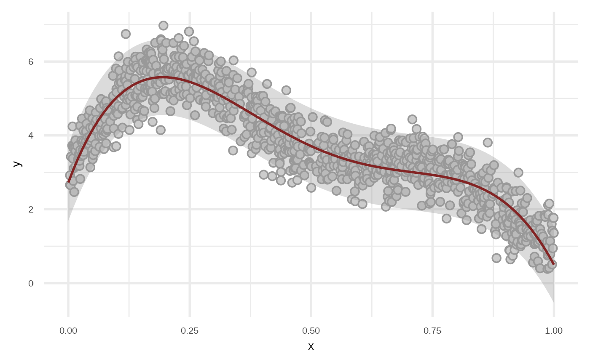
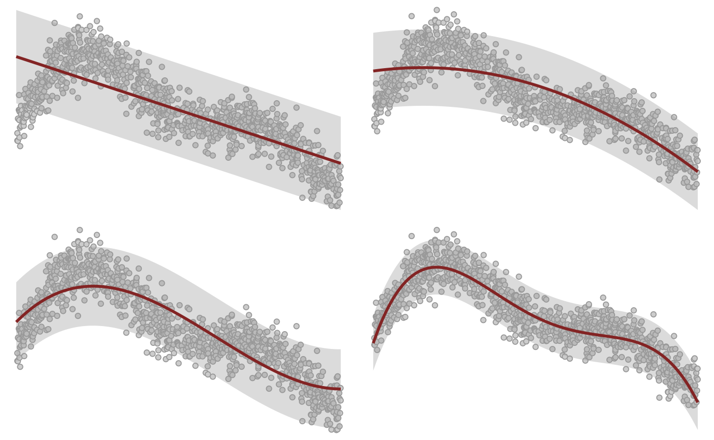
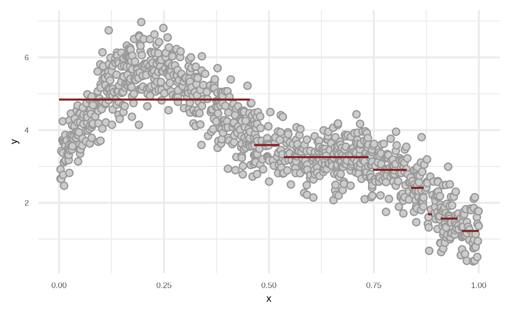
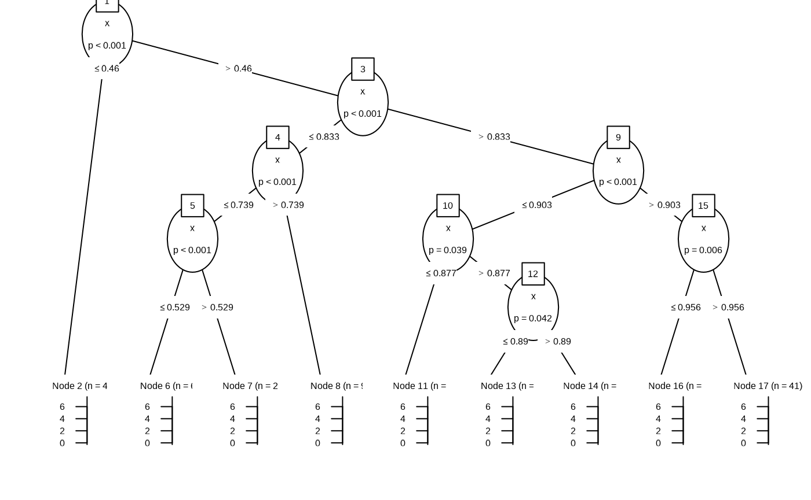
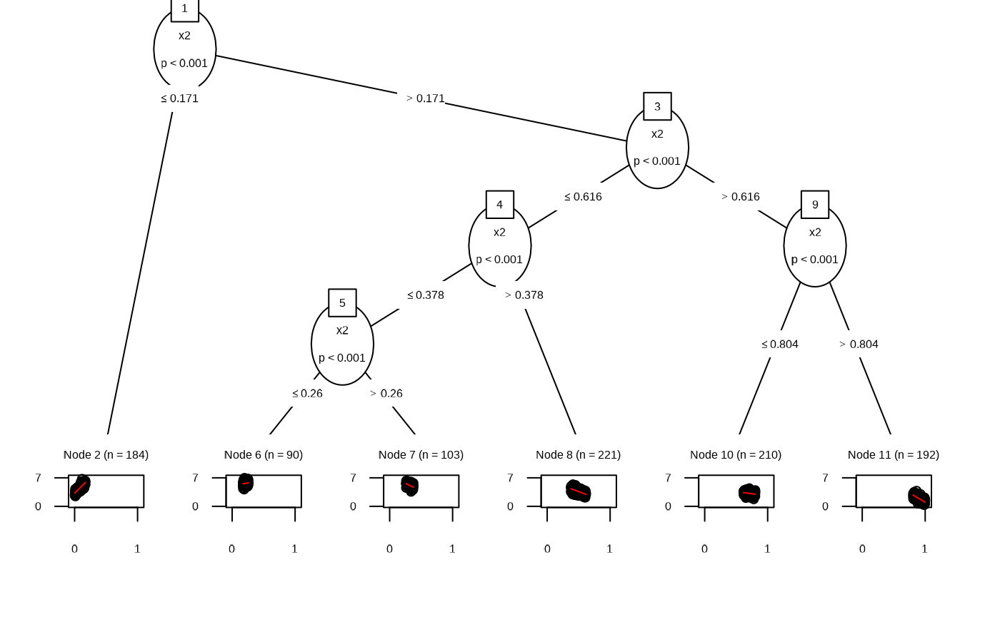

Generating data set
The main function is sim_xy, you need to define:
- A number of observations to simulate.
- Values and .
- A distribution to sample
.
For example
stats::runiforpurrr::partial(stats::rnorm, mean = 5, sd = 1). - A function to sample error values like
purrr::partial(stats::rnorm, sd = 0.5).
library(klassets)
library(ggplot2)
library(patchwork)
set.seed(123)
df_default <- sim_xy()
df_default
#> # A tibble: 500 × 2
#> x y
#> <dbl> <dbl>
#> 1 2.34 3.87
#> 2 2.36 3.68
#> 3 2.53 4.78
#> 4 2.69 4.72
#> 5 2.78 3.63
#> 6 2.84 4.37
#> 7 2.95 4.03
#> 8 2.95 3.44
#> 9 2.95 4.55
#> 10 2.99 4.45
#> # ℹ 490 more rows
plot(df_default)
We can modify the data frame to get other types of relationships.
df <- sim_xy(n = 1000, x_dist = runif)
df <- dplyr::mutate(df, y = y + 2*sin(5 * x) + sin(10 * x))
plot(df)
Fit regression algorithms
Linear Regression
This function uses stats::lm to fit a model.
df_lr <- fit_linear_model(df)
df_lr
#> # A tibble: 1,000 × 3
#> x y prediction
#> <dbl> <dbl> <dbl>
#> 1 0.00352 2.66 5.56
#> 2 0.00354 2.92 5.56
#> 3 0.00499 2.65 5.56
#> 4 0.00540 3.42 5.56
#> 5 0.00804 3.72 5.55
#> 6 0.00872 4.24 5.54
#> 7 0.00934 3.37 5.54
#> 8 0.0101 2.77 5.54
#> 9 0.0103 3.72 5.54
#> 10 0.0103 3.66 5.54
#> # ℹ 990 more rows
plot(df_lr)
By default the model use order = 1 of the variables,
i.e, response ~ x + y. We can get a better fit if we
increase the order.
df_lr2 <- fit_linear_model(df, order = 4, stepwise = TRUE)
attr(df_lr2, "model")
#>
#> Call:
#> stats::lm(formula = y ~ x + x_2 + x_3 + x_4, data = df)
#>
#> Coefficients:
#> (Intercept) x x_2 x_3 x_4
#> 2.726 35.066 -137.903 186.228 -85.616
plot(df_lr2)
Testing various orders.
orders <- c(1, 2, 3, 4)
orders |>
purrr::map(fit_linear_model, df = df) |>
purrr::map(plot) |>
purrr::reduce(`+`) +
patchwork::plot_layout(guides = "collect") &
theme_void() + theme(legend.position = "none")
Regression Tree
Internally the functions uses partykit::ctree.
df_rt <- fit_regression_tree(df)
plot(df_rt)

Linear Model Tree
Internally the functions uses partykit::mltree.
df_lmt <- fit_linear_model_tree(df)
plot(df_lmt)
Random Forest
Internally the functions uses partykit::cforest.
df_rf <- fit_regression_random_forest(df)
plot(df_rf)
# this will be relative similar to `fit_regression_tree` due
# we are using 1 tree
plot(fit_regression_random_forest(df, ntree = 1, maxdepth = 3))